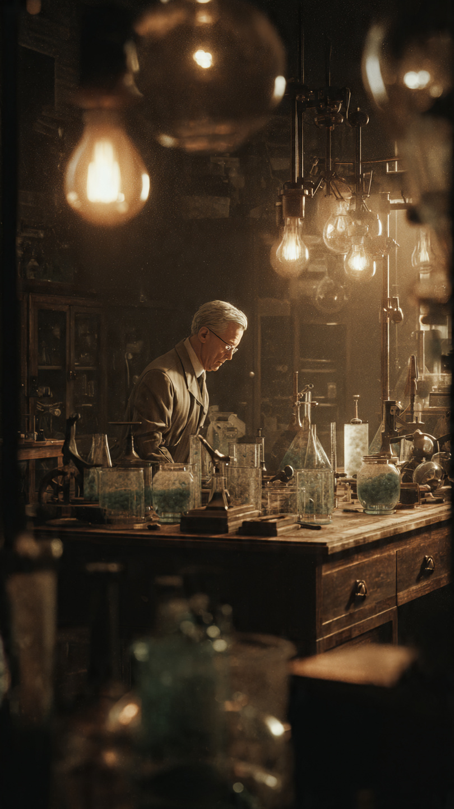
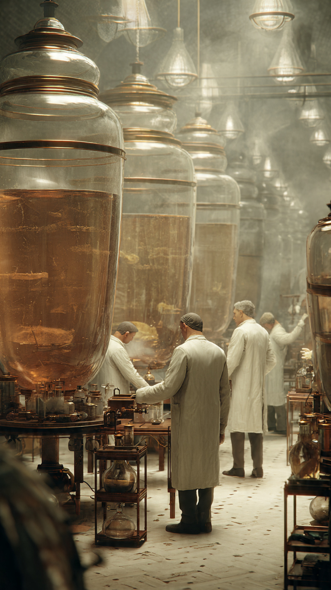

```html
العالم الذي اكتشف البنسلين بالصدفة وأنقذ مئات الملايين من البشر | اكتشافات وعلوم
```
في صيف عام 1928، كان الطبيب والعالم الاسكتلندي ألكسندر فليمنغ يعمل داخل مختبره في لندن.
لم يكن يعلم أن طبقًا صغيرًا من الزجاج سيقوده إلى اكتشاف سيغيّر تاريخ الطب بالكامل.
في ذلك الوقت، كانت العدوى البكتيرية واحدة من أكبر الأخطار التي تواجه البشر.
فجرح صغير أو عملية بسيطة قد تتحول إلى مرض خطير بسبب البكتيريا التي لا يستطيع الأطباء السيطرة عليها.
قبل اكتشاف المضادات الحيوية، كان الأطباء يقفون عاجزين أمام كثير من الالتهابات.
كانوا يستطيعون تنظيف الجروح ومحاولة منع انتشار العدوى، لكنهم لم يمتلكوا دواءً يقتل البكتيريا داخل الجسم بشكل فعال.
وكان هذا يعني أن أمراضًا يمكن علاجها بسهولة اليوم كانت تهدد حياة الكثيرين في الماضي.
كان فليمنغ يدرس نوعًا من البكتيريا يُسمى المكورات العنقودية.
كان يزرعها في أطباق خاصة داخل المختبر، ثم يراقب نموها ويحاول فهم طرق مقاومتها.
كان عالمًا دقيقًا، لكنه كان أيضًا معروفًا بملاحظة التفاصيل الصغيرة التي قد يتجاهلها الآخرون.
في أحد الأيام، عاد فليمنغ إلى مختبره بعد فترة من غياب قصيرة.
وعندما فحص بعض الأطباق القديمة، لاحظ شيئًا غير عادي.
كان أحد الأطباق قد تلوث بنوع من العفن.
في الظروف العادية، كان من الممكن أن يتخلص منه ويعتبر التجربة فاشلة.
لكن شيئًا لفت انتباهه.
حول منطقة العفن...
لم تكن البكتيريا تنمو.
كان هناك فراغ واضح وكأن شيئًا يمنعها من الاقتراب.
اقترب فليمنغ أكثر من الطبق.
وأعاد فحصه بعناية.
لم يكن مجرد تلوث عادي.
بل كان هناك شيء ينتج من العفن ويقضي على البكتيريا.
في تلك اللحظة، بدأ سؤال مهم يدور في ذهنه:
هل يمكن أن يكون هذا العفن هو بداية دواء جديد ينقذ حياة البشر؟
📷 الصورة رقم 1

بدأ ألكسندر فليمنغ دراسة العفن الغريب بعناية.
كان يريد معرفة ما الذي يجعل البكتيريا تختفي حوله.
وبعد سلسلة من التجارب، اكتشف أن العفن ينتج مادة قادرة على قتل أنواع معينة من البكتيريا دون أن تسبب ضررًا كبيرًا للخلايا البشرية.
أطلق على هذه المادة اسم البنسلين، نسبةً إلى نوع العفن الذي أنتجها.
كان هذا الاكتشاف مذهلًا.
فقد أصبح لدى العلماء أول دليل قوي على إمكانية استخدام مادة تنتجها كائنات دقيقة لمحاربة البكتيريا المسببة للأمراض.
لكن اكتشاف فليمنغ لم يتحول فورًا إلى دواء يستخدمه الناس.
واجه البنسلين مشكلة كبيرة.
فالمادة كانت صعبة الاستخراج بكميات كبيرة، ولم يكن من السهل الحفاظ على فعاليتها.
ولهذا لم يحصل الاكتشاف على الاهتمام الكافي في البداية.
كتب فليمنغ أبحاثه ونشر نتائجه، لكن معظم العلماء لم يدركوا بعد حجم ما اكتشفه.
مرت سنوات...
حتى جاء فريق من الباحثين في جامعة أكسفورد، بقيادة العالمين هوارد فلوري وإرنست تشين، وقرروا إعادة دراسة البنسلين.
استخدموا طرقًا جديدة لتنقيته وإنتاجه بكميات أكبر.
وبدأت التجارب لمعرفة هل يمكن استخدامه لعلاج البشر.
في عام 1941، تلقى أحد المرضى أولى العلاجات التجريبية بالبنسلين.
وكانت النتائج مذهلة.
بدأ المريض يتحسن بعد استخدام الدواء.
لكن المشكلة أن كمية البنسلين المتوفرة كانت قليلة جدًا.
ومع استمرار العلاج، نفد الدواء.
أظهر هذا الحدث شيئًا مهمًا.
فالاختراع كان يعمل بالفعل.
لكن العالم كان يحتاج إلى طريقة لإنتاجه بكميات ضخمة.
وفي ذلك الوقت، كانت الحرب العالمية الثانية مشتعلة، وكان الجنود يتعرضون لإصابات خطيرة يمكن أن تؤدي إلى عدوى قاتلة.
أصبح تطوير البنسلين بسرعة مهمة بالغة الأهمية.
وبدأت أكبر عملية لإنتاج الدواء...
عملية ستغير مستقبل الطب إلى الأبد.
📷 الصورة رقم 2

مع بداية الأربعينيات، أدرك العلماء أن البنسلين يمكن أن يغير مستقبل الطب.
لكن التحدي الأكبر كان إنتاجه بكميات كبيرة تكفي لعلاج آلاف المرضى.
بدأت فرق علمية وصناعية في تطوير طرق جديدة لزراعة العفن واستخلاص المادة الفعالة منه.
وبفضل هذه الجهود، أصبح من الممكن إنتاج كميات ضخمة من البنسلين.
خلال الحرب العالمية الثانية، أصبح البنسلين سلاحًا طبيًا مهمًا.
فقد ساعد في علاج الجنود المصابين بالعدوى، وقلل بشكل كبير من الوفيات الناتجة عن الجروح الملوثة.
ولأول مرة، أصبح لدى الأطباء دواء قوي يستطيع محاربة العديد من أنواع البكتيريا.
في عام 1945، حصل ألكسندر فليمنغ مع هوارد فلوري وإرنست تشين على جائزة نوبل في الطب تقديرًا لاكتشافهم وتطوير استخدام البنسلين.
لكن فليمنغ كان يدرك أن هذا الاكتشاف العظيم يحتاج إلى استخدام مسؤول.
فقد حذر من أن استخدام المضادات الحيوية بطريقة خاطئة قد يؤدي إلى ظهور بكتيريا مقاومة لها.
ومع مرور الوقت، ظهرت أنواع كثيرة من المضادات الحيوية الأخرى، وأصبحت الجراحة والعلاجات الطبية أكثر أمانًا مما كانت عليه في الماضي.
أصبح مرض كان يمكن أن يقتل الإنسان خلال أيام...
مرضًا يمكن علاجه بدواء بسيط.
لكن قصة البنسلين لا تزال تحمل درسًا مهمًا.
فأحيانًا لا يأتي أعظم اكتشاف من تجربة مخطط لها بالكامل.
بل قد يبدأ من ملاحظة صغيرة، ومن شخص ينتبه إلى شيء يراه الآخرون مجرد خطأ.
وهكذا...
بدأت القصة بطبق مختبر تُرك بالصدفة.
طبقة صغيرة من العفن بدت كأنها مشكلة.
لكنها كانت في الحقيقة مفتاحًا لثورة طبية أنقذت حياة ملايين البشر.
لم يكن فليمنغ يبحث عن معجزة...
لكنه كان يملك أهم صفة يحتاجها العالم الحقيقي:
القدرة على ملاحظة ما لا يراه الآخرون.